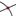

Intersection points of two objects can be created in two ways (also see command Intersect).
· Selecting two objects creates all intersection points (if possible).
· Directly clicking on an intersection of the two objects creates only this single intersection point .
Note: For segments, rays, or arcs you may specify whether you want to Allow outlying intersections on tab Basic of the Properties Dialog. This can be used to get intersection points that lie on the extension of an object. For example, the extension of a segment or a ray is a straight line.
You may click on either two points or one segment to get its midpoint. You can also click on a conic section (circle or ellipse) in order to create its center point (also see commands Center and Midpoint).
Click on the drawing pad in the Graphics View in order to create a new point. The coordinates of the point are fixed when the mouse button is released.
Note:
· By clicking on a segment, straight line, polygon, conic section, function, or curve you can create a point on this object (also see command Point).
· Clicking on the intersection of two objects creates this intersection point (also see tool  Intersect Two Objects and command Intersect).